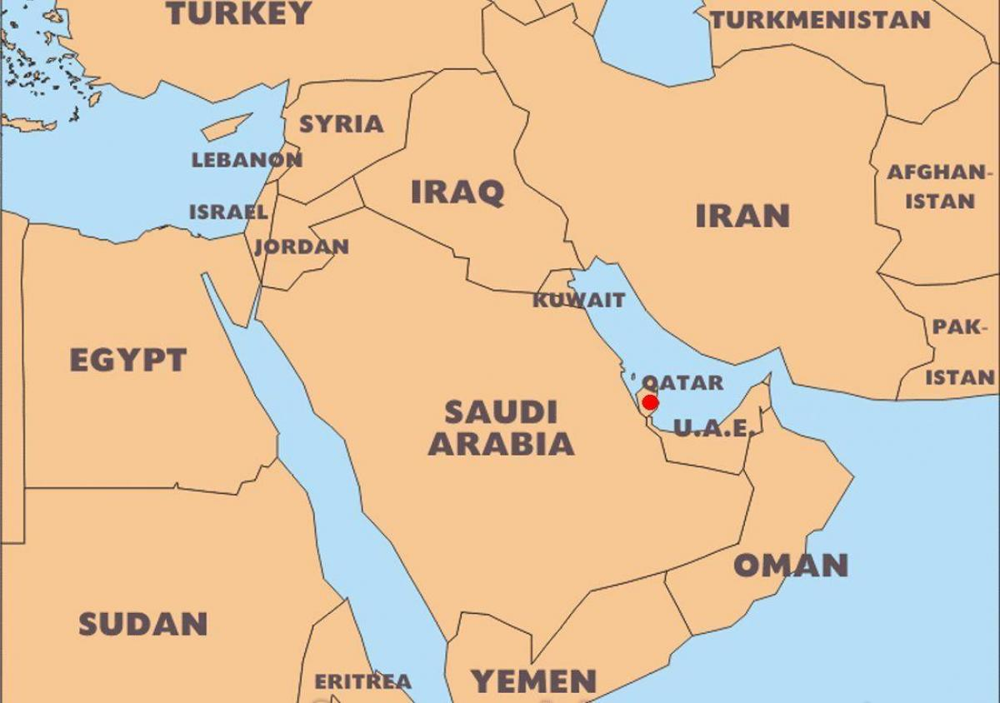

O país sede: Catar
Catar (ou Qatar, na transcrição internacional) é um país do Oriente Médio, pequeno em extensão e grande economicamente. O país árabe, oficialmente chamado de Estado do Catar, corresponde a um emirado, ou seja, é um território administrado pelo membro da classe dominante, o emir.
Localização Geográfica
O país localiza-se na península arábica na Ásia Continental, correspondendo a uma área de aproximadamente 11.610 km2 até o norte do Golfo Pérsico. O Catar faz fronteira com a Arábia Saudita e é separado por um estreito do Golfo Pérsico do país Bahrein.
População
A população do Catar varia consideravelmente dependendo da época, uma vez que o país depende fortemente de trabalho migrante. Em 2020, a população total do Qatar era de 2,8 milhões, dos quais 313 000 eram cidadãos do Catar (12%) e 2,3milhões eram estrangeiros.[1] Os estrangeiros não árabes constituem a grande maioria da população de Qatar; os indianos são a maior comunidade, em número de 545 000 em 2013, seguido por 341 000 nepaleses, 185 000 filipinos, 137 000 bengalis, 100 000 cingaleses e 90 000 paquistaneses entre muitas outras nacionalidades.
Principais atividades econômicas/riquezas
O Catar era considerado um protetorado britânico devido à divisão do Império Otomano. Tornou-se independente do Reino Unido em 1971, vindo a ser um Estado soberano. A dinastia reinante frente ao governo do Catar é a família Al Thani, há quase 150 anos. A monarquia é herdada de pais para filhos.
É atualmente um dos países mais ricos do mundo e com umas das menores cargas tributárias, segundo o Relatório Global de Competitividade. Mas esse histórico de riquezas deu-se a partir dos anos 40, quando se iniciou no país a exploração do petróleo e gás natural.
O país é rico em recursos naturais, sendo um dos maiores produtores de gás natural do mundo. No ano de 1974, o Qatar Petroleum assumiu a exploração e controle do petróleo existente no país, alavancando a economia.
Segundo o Observatório da Complexidade Econômica (OEC), o Catar é a 47º maior economia de exportação do mundo, tendo exportado, em 2017, um total de US$ 52,3 bilhões. As principais exportações do país são o petróleo, petrolíferos refinados, polímeros de etileno e alumínio em formas brutas. Os principais destinos desses produtos são a Coreia do Sul, Japão, Índia, China e Cingapura.
Já no que tange às importações, em 2017 o Catar importou, de acordo também com a OEC, US$ 21,6 bilhões. As principais importações do país são aviões, helicópteros, carros, turbina a gás e joias, e são originadas de países como Reino Unido, França, Alemanha e China. A balança comercial do emirado é, portanto, positiva com saldo de US$ 30,7 bilhões.
A Copa do Mundo
Quantidade de seleções
Já foram definidas as 32 seleções garantidas no Mundial do Catar, que acontece entre novembro e dezembro deste ano.
A primeira copa do mundo
A primeira Copa do Mundo, realizada no Uruguai, contou com apenas 13 seleções participantes, dessas, 4 representavam países europeus, as demais, países do continente americano. O Uruguai enfrentou a Argentina na final e venceu por 4 a 2.